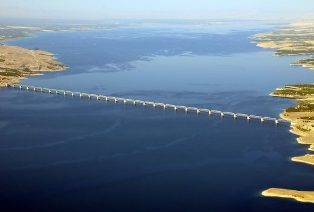

<!DOCTYPE html>
<html lang="tr">

</html>
<html>

<head>
    <meta charset="UTF-8">
    <title>Kişisel Web Sitem</title>
    <link rel="stylesheet"  type="text/css" href="css/main.css">
    <link rel="stylesheet"  type="text/css" href="css/legacy.css">
</head>

<body>
    <!-- Header - Start -->
    <div class="container">
        <header>
            <div class="header-container">
                <div class="logo">
                    <a href="#">Mert Can Yeter</a>
                </div>
                <ul>
                    <li><a href="about-me.html">Hakkımda</a></li>
                    <li><a href="biography.html">Öz Geçmiş</a></li>
                    <li><a href="city.html">Şehrim</a></li>
                    <li><a href="legacy.html" class="active">Mirasımız</a></li>
                    <li><a href="hobbies.html">İlgi Alanlarım</a></li>
                    <li><a href="contact.html">İletişim</a></li>
                </ul>
            </div>
        </header>
        <!-- Header - End -->

        <!-- Content - Start -->
        <section>
            <!-- Articles - Start -->
            <article>
                <h2>Mirasımız</h2>
                <div class="mirasimiz-container">
                  <div class="mirasimiz-item">
                    
                    <h3>Kudret Havuzu</h3>
                    <p>Tohma Kanyonu içerisinde, kayaların arasından akan suyu  yaz-kış 22 °C sıcaklıkta olan 3 adet havuzdan oluşmaktadır. 
                        Kudret havuzu özellikle yaz aylarında İlçemize gelen ziyaretçiler için mükemmel bir eğlence, yüzme, serinleme ihtiyacı hissedenlerin isteklerini maksimum düzeyde karşılayan bir mekandır.
                         Havuzu dolduran su dakikada 11 metreküp debi ile akmaktadır.</p>
                  </div>
                  <div class="mirasimiz-item">
                    
                    <h3>Taş Köprü</h3>
                    <p>Arapgir İlçesine bağlı Suceyin Mahallesi, Taşköprü Mevkiindedir. Arapgir-Divriği karayolunun 16. km. sinden sola ayrılan stabilize Suceyin yolunun (9 km.) devamındaki, 
                        mahalle içinden batıya ayrılan toprak arazi yolunu takiple (5 km. lik yol) Taşköprü mevkiine gelindikten sonra, yerleşimin güneybatısındaki Kozluk Çayı üzerindedir. 
                        Köprü batı tarafı dik kayalık olan derin kanyon içinde ana kayalara oturtulmuş ve kesme taştan yapılmış yüksek kemerli bir mimari üsluba sahiptir. 
                        Köprünün su girişi ve çıkış yönündeki kasnaktaki taşlar dökülmüştür. Köprüden çıkış-giriş yönleri üzerindeki üst örtü kısmı kavisli olup çevredeki kayalık alandan sağlanıp yontulan taşlardan yapılmıştır. 
                        Yan dolgular ve toprak yolla birleşen bölümde moloz taşlar ve horasan harcı kullanılarak örgü yapılmıştır. Köprü, yakın çevrede bulunan Osmanlı dönemi köprülerinden mimari üslup bakımından ayrılmaktadır.
                         Büyük bir ihtimalle Geç Roma Dönemine (M.S. 3-4 YY.) tarihlenmektedir.</p>
                  </div>
                  <div class="mirasimiz-item">
                    
                    <h3>Karakaya Barajı</h3>
                    <p>Karakaya Baraj Gölü
                        Atatürk Barajı'ndan sonra Türkiye'nin ikinci büyük barajı olan Karakaya Barajı, Malatya il sınırları içerisinde bulunmaktadır.                        
                        Baraj yapımında meydana gelmiş olan Karakaya Baraj Gölü ise yakın bir zamanda Kültür ve Turizm Koruma ve Gelişim Bölgesi olarak kabul edilmiştir. 
                        Karakaya Baraj Gölü'nün çevresinde turistik tesisler bulunmakla birlikte feribot işletmesi çalışmaları da yapılmıştır.
                         Bu arada Türkiye'nin en uzun demiryolu köprüsü de baraj gölünün üzerinde bulunmaktadır.    
                        Bu çalışmalar sayesinde önemli bir turizm noktası olma yönünde önemli adımlar atılmıştır. 
                        Malatya'ya bir seyahat planlıyorsanız Karakaya Baraj Gölü yakınında bulunan otellerin birinde konaklayarak, bölgede birkaç gün zaman geçirebilirsiniz.</p>
                  </div>
                </div>
              </article>
            <!-- Articles - Start -->
        </section>
        <!-- Content - End -->

        <!-- Footer - Start -->
        <footer>
            <div id="social-media">
              <a href="https://www.linkedin.com/in/mert-can-yeter-150b8425a/" target="_blank" class="fab fa-linkedin"></a>
              <a href="https://www.instagram.com/mertcanytr/" target="_blank" class="fab fa-instagram"></a>
            </div>
          </footer>
        <!-- Footer - End -->


    </div>
</body>

</html>